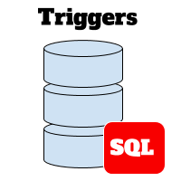

NO LECTURE - See slides
Lecture 27
Thursday - Apr 24, 2025
Housekeeping
Discussion items
Homework 9 - Even more on SQL - due 4/27, SUN
Deliverable 7 - Final Submission - due 4/29, TUE
Survey 2 - Course evaluation - due 4/29, TUE
| Module | Week | Date | Day | Notes and Lectures | Activities and due dates |
|---|---|---|---|---|---|
| SQL II | 15 | 4/24 | Thu | L27:NO LECTURE - See slides | |
| SQL II | 15 | 4/27 | Sun | HW9:Even more on SQL | |
| SQL II | 16 | 4/29 | Tue | Last day of classes; L28:NO LECTURE - See slides | Srv2:Course evaluation; Prj7:Final Submission |
| SQL II | 16 | 5/1 | Thu | Finals begin |
End of semester checklist
End of Semester Checklist
Lecture update
Lecture on Thursday, April 24 is CANCELLED. Review the slides!
Lecture on Tuesday, April 29 is CANCELLED. Review the slides!
I will be submitting course updates via Canvas Announcements. We will have no scheduled in-class activities.
Please use the Discord and the TAs as your first stop for questions.
My response time over the next week will be slow.
End of semester checklist
It’s end of the semester time! Plenty to do to ensure that you earn your best grade possible!
No final exam. I’ve got plenty to assess your learning and comprehension.
Check the gradebook. It was updated over the weekend.
- Verify your scores and email me if you have any questions
- Submit any missing assignments, discussions or quizzes.
Complete the course evaluation. You’ll get credit towards your final grade AND you’ll be helping improve the course for the next group of students. Thank you!
HARD DEADLINE
Submission Deadline
Tuesday - April 29 - Midnight
No late work will be accepted.
SQL Procedures
SQL Procedures - Introduction
What is a SQL subprogram?
- A SQL subprogram is a set of SQL statements that can be executed as a single unit.
- FUNCTIONS are used to encapsulate logic for later use inside a SELECT statement.
- PROCEDURES are used to encapsulate a series of SQL commands for reusability and ease of maintenance.
- CREATE PROCEDURE and CREATE FUNCTION are a DDL statements and belongs in the DDLs file.
- Functions and procedures are later used inside the DML file.
SQL subprograms - Motivation (1)
SQL subprograms should be used in various situations to improve code organization, reusability, security, and performance. Here are some common scenarios when you should consider using SQL procedures:
Code Reusability and Maintenance: Subprograms allow you to encapsulate a series of SQL statements into a single unit. This makes it easier to reuse the same logic across multiple parts of your application, reducing code duplication.
Complex Queries: When dealing with complex queries involving multiple tables, joins, conditions, or calculations, subprograms can simplify the code and make it more manageable.
Security: Subprograms can help enhance security by allowing you to control who has access to execute specific procedures rather than granting direct table access. This can be useful for enforcing security policies and limiting potential risks.
Transaction Management: Procedures can be used to wrap a series of SQL statements within a transaction, ensuring data integrity. This is crucial when you need to perform multiple database operations as a single unit, and all must succeed or fail together.
Performance Optimization: By using procedures, you can precompile and optimize SQL statements, which can improve query execution performance. This is particularly beneficial for frequently executed queries.
Parameterized Queries: Procedures and functions can accept input parameters, making them versatile for handling various data scenarios without changing the underlying SQL code. This parameterization helps prevent SQL injection attacks and promotes code stability.
SQL Subprograms - Motivation (2)
SQL procedures and functions should be used in various situations to improve code organization, reusability, security, and performance. Here are some common scenarios when you should consider using SQL procedures:
Version Control and Maintenance: Procedures and functions provide a modular structure that simplifies version control and maintenance of database logic. Changes can be made to procedures without affecting the application code that calls them.
Business Logic Separation: Procedures and functions allow you to separate business logic from application code. This can make your codebase more maintainable and facilitate collaboration between database developers and application developers.
Scheduled Jobs: Procedures and functions can be scheduled to run at specific intervals using database scheduling mechanisms. This is useful for automating routine tasks, data cleanup, or generating reports.
Audit Trails: Procedures and functions can be used to implement audit trails, recording changes made to the database for tracking and compliance purposes.
Comparision - Functions and Procedures
| Aspect | Procedure | Function |
|---|---|---|
| Return Value | Does not return a value directly (uses OUT parameters or SELECT). |
Must return a single value using RETURN. |
| Use in SQL Statements | Cannot be used in SQL statements. | Can be used directly in SELECT, WHERE, etc. |
| Typical Use Case | Perform complex tasks, including multiple queries and updates. | Perform calculations or return a single value. |
SQL Functions - CREATE FUNCTION
Example FUNCTION
DELIMITER //
CREATE FUNCTION CalculateTotalPrice
(ProductID INT, Quantity INT)
RETURNS DECIMAL(10, 2) DETERMINISTIC
BEGIN
DECLARE unit_price DECIMAL(10, 2);
-- Get unit price for input ProductID
SELECT unit_price INTO unit_price
FROM products
WHERE product_id = ProductID;
-- Return the calculated total price
RETURN unit_price * Quantity;
END //
DELIMETER ;- Procedures can accept arguments on INPUT and arguments for OUTPUT
- In the example above, the procedure accepts 2 arguments on input and returns a table.
Explanation
RETURNS DECIMAL(10, 2):- Specifies that the function returns a value of type
DECIMALwith up to 10 digits and 2 decimal places. Adjust this as needed based on your price data.
- Specifies that the function returns a value of type
DETERMINISTIC:- Indicates that the function always returns the same result for the same input. This is required if the function is deterministic (e.g., no randomness or time-based calculations).
DECLAREStatement:- Used to define a variable
unit_priceto temporarily store the product’s unit price.
- Used to define a variable
RETURNStatement:- Calculates and returns the total price.
- Procedures can contain multiple SQL statements. Statements executed in order and the results of one may feed the next.
- Procedures can contain WHILE LOOP and other control statements.
SQL Functions - Examples
-- Get the total price for ProductID 1 and Quantity 10
SELECT CalculateTotalPrice(1, 10) AS total_price;
-- Use the function in a SELECT statement
SELECT product_id, CalculateTotalPrice(product_id, 5) AS total_price
FROM products
WHERE product_id IN (1, 2, 3);
-- Insert the result into another table
INSERT INTO order_summary (product_id, total_price)
VALUES (1, CalculateTotalPrice(1, 10));SQL Procedures - CREATE PROCEDURE
FUNCTIONS are handy to streamline and cleanup SELECT statements.
PROCEDURES encapsulate broader workflows. For example we might write a new PROCEDURE to encapsulate the CalculateTotalPrice FUNCTION.
For example, a procedure could:
- Place an Order: Insert an order into an
orderstable using the calculated total price. - Generate a Summary: Log or return a detailed breakdown of an order, including the product name, quantity, and total price.
- Handle Multiple Items: Work with multiple products in one transaction and use the function to calculate totals for each.
SQL PROCEDURES
Example: CREATE PROCEDURE
DELIMITER //
CREATE PROCEDURE PlaceOrder(
IN ProductID INT,
IN Quantity INT
)
BEGIN
DECLARE TotalPrice DECIMAL(10, 2);
-- Use the CalculateTotalPrice function to get the total price
SET TotalPrice = CalculateTotalPrice(ProductID, Quantity);
-- Insert the order into the orders table
INSERT INTO orders (product_id, quantity, total_price)
VALUES (ProductID, Quantity, TotalPrice);
-- Optionally print a confirmation message
SELECT CONCAT('Order placed successfully for ProductID ', ProductID,
' with Quantity ', Quantity,
' and Total Price ', TotalPrice) AS confirmation_message;
END //
DELIMITER ;Assumptions:
- We’ve got two tables:
orders: To record order details (order_id,product_id,quantity,total_price).products: To look up product details (as used in theCalculateTotalPricefunction).
How It Works:
- Uses the
CalculateTotalPriceFunction:- The procedure calls the function to compute the total price dynamically.
- Records the Order:
- Inserts the order into the
orderstable.
- Inserts the order into the
- Provides Feedback:
- Returns a confirmation message to the user about the order.
SQL PROCEDURES
Suppose that you have a web application that gathers items and quantities. These data could be passed to SQL and a single procedure can be responsible for doing all the work
Example Usage
To place an order for product ID 1 with a quantity of 5:
orders Table Example
After placing the order, the orders table might look like this:
| order_id | product_id | quantity | total_price |
|---|---|---|---|
| 1 | 1 | 5 | 50.00 |
Variations:
- Order Summary: Enhance the procedure to return an order summary with product details.
- Handle Stock: Extend the procedure to decrement the stock quantity in the
productstable after an order. - Error Handling: Add logic to check if the product exists or has sufficient stock before placing the order.
SQL Procedures - Who might use them
Roles That Typically Use Stored Procedures
Database Administrators (DBAs): DBAs use stored procedures for database maintenance, security, backup, and performance optimization.
Application Developers: Application developers use stored procedures to encapsulate database logic within applications for CRUD operations and business logic.
Database Developers: Database developers specialize in creating and optimizing database objects, including stored procedures.
Data Analysts: Data analysts may use stored procedures for ETL processes, data transformations, and reporting.
System Administrators: System administrators use stored procedures for scheduling and monitoring tasks, such as backups and maintenance.
Roles That Typically Don’t Use Stored Procedures
Quality Assurance (QA) Testers: QA testers focus on testing applications and typically do not create or manage stored procedures.
Business Analysts: Business analysts define business requirements and provide input but do not typically interact with stored procedures directly.
End Users: End users of applications or reporting tools usually have no direct involvement with the creation or execution of stored procedures.
SQL Procedures - Summary
- Stored procedures are a handy tool for the tool belt.
- They’re usually written to help with DB adminstration and maintenance.
- In general, procedures and functions can streamline your code, making it more readible and module.
- However, exercise caution when using functions and procedures - they can KILL your performance if implemented incorrectly!
SQL Triggers
TRIGGERS in SQL
What is a TRIGGER?
- A Trigger is a stored program in SQL that automatically executes in response to specified events on a table or view.
- It is event-driven and tied to a specific table or event like
INSERT,UPDATE, orDELETE.
Why Use TRIGGERS?
- Enforce business rules automatically at the database level.
- Maintain data integrity and consistency across tables.
- Automate tasks like logging changes or generating audit records.
- Perform validation or cascading updates without requiring manual intervention.

Create a TRIGGER
Syntax
DELIMITER //
CREATE
[DEFINER = user]
TRIGGER [IF NOT EXISTS] trigger_name
trigger_time trigger_event
ON tbl_name FOR EACH ROW
[trigger_order]
BEGIN
trigger_body
END;
//
DELIMITER ;
trigger_time: { BEFORE | AFTER }
trigger_event: { INSERT | UPDATE | DELETE }
trigger_order: { FOLLOWS | PRECEDES } other_trigger_nameExample
DELIMITER //
CREATE TRIGGER update_stock_after_order
AFTER INSERT ON orders
FOR EACH ROW
BEGIN
UPDATE products
SET stock_quantity = stock_quantity - NEW.quantity
WHERE product_id = NEW.product_id;
END; //
DELIMITER ;- CREATE TRIGGER is a DDL statement
- TRIGGERS follow same rules as stored procedures
TRIGGERS in SQL: When and When NOT
When to Use a Trigger
Automating Tasks: Use triggers to automate repetitive or administrative tasks, such as maintaining audit logs, tracking changes, or updating related tables.
Enforcing Business Rules: Triggers are ideal for enforcing complex business rules that cannot be implemented with constraints alone, like ensuring data consistency across related tables.
Data Validation: Use triggers to validate or modify data before it is inserted, updated, or deleted, preventing invalid or incomplete data from being stored.
Reacting to Data Changes: Triggers are helpful when you need to execute specific actions automatically in response to data modifications, such as sending notifications or recalculating aggregated values.
When NOT to Use a Trigger
Performance-Sensitive Scenarios: Avoid triggers in scenarios with high transaction volume, as they can introduce overhead and impact database performance.
Complex Logic: Do not use triggers for complex business logic that could be better handled in the application layer, where debugging and maintenance are easier.
Cross-System Dependencies: Triggers are unsuitable when actions depend on external systems or APIs, as this can cause reliability and latency issues.
Frequent Schema Changes: Avoid using triggers if the table schema is subject to frequent changes, as this can make maintenance cumbersome and error-prone.
TRIGGERS in SQL: Benefits and Considerstaions
Other DDL Commands for Triggers
- CREATE TRIGGER
- DROP TRIGGER
Benefits of Triggers
- Automation of database operations.
- Enforcing business rules and data integrity.
- Maintaining audit trails for data changes.
- Reducing application-level logic by embedding functionality directly in the database.
Considerations
- Triggers can simplify automation but may make debugging and maintenance more complex.
- Excessive use of triggers can lead to performance overhead, especially with frequent table modifications.
- Triggers are NOT intended to replace application logic but to complement it for database-specific tasks.
- Triggers execute silently, which may lead to unintended consequences if not carefully designed.
- WARNING – cascading effects from triggers can create unexpected or recursive behavior.
Security - SQL Injection
SQL Injection - Introduction
SQL Injection: What is it?
- A common security vulnerability in web and API applications.
- Enabled by lazy or immature SQL coding practices.
- Occurs when an attacker manipulates input to execute malicious SQL queries.
- Common in older web and api applications

SQL Injection - Examples
The Problem: Unsanitized User Input
- Web applications often take user input through forms or query strings.
- If not properly validated and sanitized, user input can be used to alter SQL queries.
SQL Injection - Examples
Example 2: Data Leakage
- Scenario: Search Feature
- Vulnerable Code:
- Attack: Input as
searchKeyword = ' UNION SELECT username, password FROM users-- - Result: Returns user credentials alongside product data.
SQL Injection - Mitigation
It’s pretty simple, NEVER build a query raw. Here are a few suggestions.
Solution 1: Prepared Statements
- Parameterized queries that separate SQL code from user input.
- Example (Python):
Solution 2: Input Validation
- Validate and sanitize user input.
- Reject input that doesn’t meet expected criteria.
- Examples:
- Ensure email input is a valid email address.
- Remove extra spaces from user names.
- Remove comment “–” strings from query.
- Remove semicolons “;” from inputs.
SQL Injection - Mitigation
Solution 3: Least Privilege Principle
- Avoid using highly privileged accounts in application code.
- Create a unique user for the web application,
- Don’t use your developer account or other account.
- Limit the web application user permissions in database.
- Allow web app INSERT, UPDATE, and DELETE
- Disallow web app DROP, CREATE, GRANT, others.
Solution 4: Web Application Firewalls (WAFs)
SQL Injection - Summary
Best practices
- Use prepared statements or parameterized queries.
- Implement input validation.
- Follow the least privilege principle.
- Use a Web Application Firewall (WAF).
Recap
- SQL Injection is a serious security threat.
- Prevention is essential through proper coding practices.
- Stay updated on security best practices and vulnerabilities.
Housekeeping
Discussion items
Homework 9 - Even more on SQL - due 4/27, SUN
Deliverable 7 - Final Submission - due 4/29, TUE
Survey 2 - Course evaluation - due 4/29, TUE
| Module | Week | Date | Day | Notes and Lectures | Activities and due dates |
|---|---|---|---|---|---|
| SQL II | 15 | 4/24 | Thu | L27:NO LECTURE - See slides | |
| SQL II | 15 | 4/27 | Sun | HW9:Even more on SQL | |
| SQL II | 16 | 4/29 | Tue | Last day of classes; L28:NO LECTURE - See slides | Srv2:Course evaluation; Prj7:Final Submission |
| SQL II | 16 | 5/1 | Thu | Finals begin |
CMSC 408 - Databases